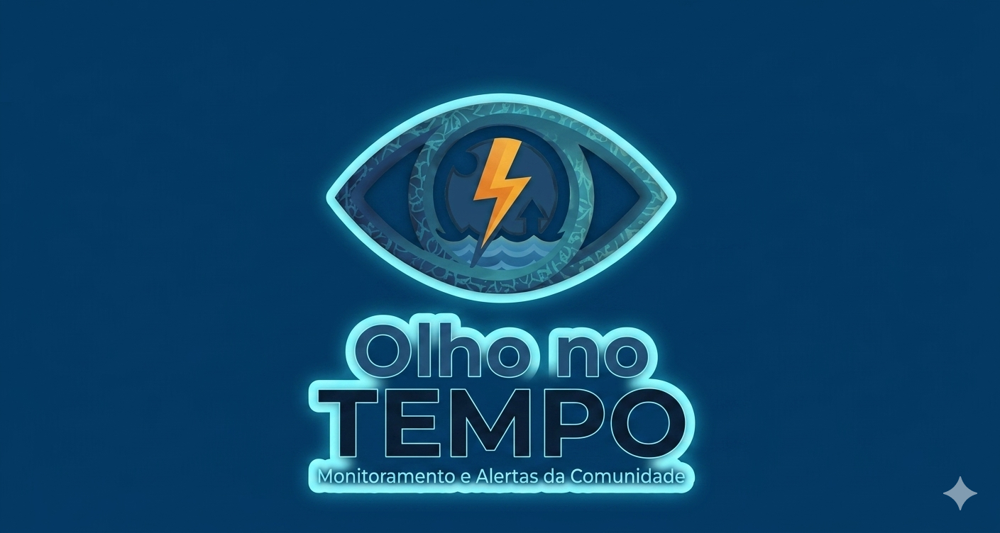

Redefinir a Senha
Para recuperar a sua senha, informe seu endereço de e-mail e nós enviaremos um link para a alteração da senha.
Voltar à tela de login? Faça login.

Para recuperar a sua senha, informe seu endereço de e-mail e nós enviaremos um link para a alteração da senha.
Voltar à tela de login? Faça login.